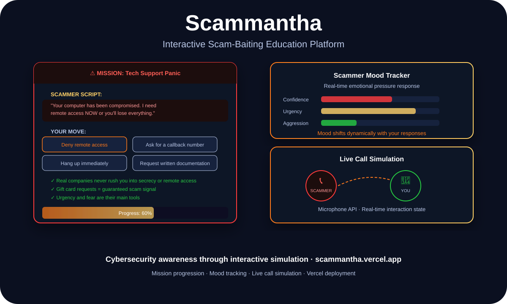

Cybersecurity · UX Design · Education
Scammantha: Teaching Scam Resistance Through Live Call Simulation, Not Awareness Videos

Danish Nadar
AI Engineer · Cybersecurity Product · Illinois Institute of Technology
People know scams exist. They still fall for them. Scammantha puts users inside simulated scam calls so they can practice the judgment calls before they face a real one.

Scammantha — interactive call simulation, mission progression, and scammer mood tracking
The problem with awareness-only education
Cybersecurity awareness training works on paper. Show someone a phishing example, explain what to look for, quiz them at the end. They pass. Two weeks later, they click the link anyway — because awareness doesn't build the reflexes that judgment under pressure actually requires.
The research on this is pretty consistent: people don't fail security tests because they don't know what a scam is. They fail because in the moment — when there's urgency, when an authority figure is on the line, when the stakes feel real — the patterns they learned in training don't activate fast enough.
Scammantha's premise is that you have to train the reflex, not just the knowledge. That means putting users in realistic scenarios and making them act — not just identify.

Live at scammantha.vercel.app
How the simulation engine works
The core mechanic is a call simulation: a scammer's script plays out in real time, and the user has to respond — with words, with actions, with counterarguments. The system tracks what the user does and adjusts the scammer's behavior in response.
The scammer mood tracking system is the feature that makes it feel real. If the user pushes back effectively — identifies the manipulation tactic, refuses a request, asks a question that derails the script — the scammer's urgency increases. If the user complies, the scammer gets more confident. This dynamic pressure is the thing that passive training can't reproduce.
Mission scenarios are structured around real scammer playbooks: tech support calls, IRS impersonation, gift card extraction, remote access requests. Each mission teaches one or two specific recognition patterns — not by describing them, but by forcing the user to encounter and respond to them in real time.
Microphone integration and the UX decisions it required
Scammantha supports microphone input — users can actually speak their responses, not just click buttons. This required handling browser permission flows, audio capture, and graceful fallback for environments where microphone access isn't available.
The UX decision that mattered most: don't force microphone use. Some users are in public spaces, some are on systems without microphone access, and some just prefer typing. The platform works fully in either mode. That flexibility was important for making Scammantha genuinely accessible as a training tool, not just a demo.
Stack
JavaScript · Web Speech API · Microphone API · Vercel · Mission progression engine
Core insight
Security training that doesn't build reflexes under pressure doesn't work. Scammantha is designed to build the reflex, not just the knowledge.